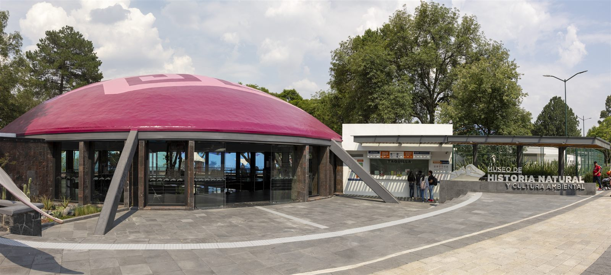

Antecedentes
El Museo de Historia Natural y Cultura Ambiental fue inaugurado el 24 de octubre de 1964. Se encuentra en la Segunda Sección del Bosque de Chapultepec y depende de la Secretaría del Medio Ambiente de la Ciudad de México. Es un espacio de divulgación científica y cultural que promueve el conocimiento del Universo, la Tierra, la vida y la Cultura Ambiental.
El diseño del inmueble estuvo a cargo del arquitecto Leónides Guadarrama, mientras que el plan museográfico fue realizado por especialistas del Instituto Politécnico Nacional, liderados por Dionisio Peláez Fernández.
En 1999, la administración del museo se transfirió a la Secretaría del Medio Ambiente del Gobierno del Distrito Federal, y en 2001 se integró a la Dirección General de Bosques Urbanos y Educación Ambiental.
Exposiciones
Maravillas marinas: Una ventana a la riqueza de las profundidades
El mar reúne un cúmulo de maravillas descubiertas a lo largo de la historia de la humanidad. Iniciamos explorando su superficie para obtener recursos, utilizándolo como vía de comunicación y comercio, hasta llegar al desarrollo de la oceanografía, que ha permitido descifrar la estructura, composición y dinámica de los océanos, así como conocer sus profundos abismos.
El mar cuenta con ecosistemas donde existen todos los filos, desde microorganismos hasta plantas y animales que representan el doble de la biodiversidad terrestre. Aunque se han realizado un gran número de avances científicos, la inmensidad del mar significa que aún falta mucho por descubrir. Esto abre un sinfín de oportunidades para explorar sus riquezas naturales.
De ahí la importancia de generar vocación e interés por su estudio y conservación. Es por ello que el Museo de Historia Natural, en colaboración con la Asociación Mexicana de Imagen Subacuática A.C. (AMISUB), la Universidad Autónoma Metropolitana Campus-Iztapalapa (UAM-I), la Universidad Nacional Autónoma de México (UNAM) y la Secretaría de Marina (SEMAR), presenta esta muestra para propiciar la admiración y despertar la curiosidad por el increíble mundo submarino.
Amando el mar
Tu vastedad azulada hoy me inspira, en la playa sin principio ni fin.
Punto de encuentros y partidas, donde existe la sirena y el delfín.
Un cuerpo en eterno movimiento, el color y el aroma del tiempo.
Respiro tu sal y me invade el recuerdo, me dejo arrastrar lejos.
A la deriva siguiendo tus curvas con la mirada expectante.
Incorporando tus olas, tu vida, tu sonido y bamboleo elegante.
Ando en la rompiente, pareces venir y retroceder con inquietud.
Mientras aquí un humilde mortal te admira en quieta plenitud.
Cuéntame tus historias, háblame en tu lenguaje, en secreto.
Y yo me sentaré aquí, observando las nubes danzar en tu reflejo.
Ventus. Viento, movimiento y vida.
Ventus. Viento, movimiento y vida, es una exposición conformada por imágenes cuyo objetivo es presentar al visitante algunos de los aspectos más relevantes que el viento o ventus, término romano, tiene en la regulación del clima, los procesos biológicos de diversos organismos y como fuente energética de la humanidad.
Se denomina viento al desplazamiento horizontal del aire. Este fenómeno es causado por las diferencias de temperatura, al calentarse de manera desigual la superficie del planeta y la atmósfera, debido a la redondez de la Tierra. Representado en pinturas y esculturas o mencionado en mitos, las antiguas civilizaciones concebían al viento como un dios, ya que constituye una de las manifestaciones más poderosas de la naturaleza. Puede presentarse con una intensidad moderada, suficiente para aportar la energía necesaria en el funcionamiento de un molino o el impulso de los barcos de vela, hasta violenta y destructiva, en el caso de los huracanes y tornados.
El viento:
- Cumple un importante papel en la regulación del clima.
- Contribuye a la supervivencia de numerosos organismos vegetales, actuando como un jardinero que transporta polen y semillas.
- Lleva la humedad evaporada de los océanos al interior de los continentes, en forma de lluvia y nieve.
- Da forma a nuestro mundo, modificando constantemente la superficie del planeta.
- Adquiere cada vez mayor importancia, como una alternativa a los combustibles fósiles, al ser considerado una forma limpia para generar la electricidad que necesitamos.
Horarios de Servicio
Abierto de martes a domingo de 10:00 a 17:00.
Precios
Entrada general: $50 MXN. Entrada gratuita los domingos para residentes mexicanos.
Ubicación
Segunda Sección del Bosque de Chapultepec, Ciudad de México.
Página Oficial del Museo de Historia Natural
Descubre más sobre sus exhibiciones y eventos en su página oficial: Visita el sitio del Museo de Historia Natural.